Avec ce Code, trouvez une pente, un escalier, quelque chose qui descend. Gardez le Bouton VERT appuyé, descendez la Pente, et hop, vous vous envolez ! Pour redescendre, lâchez simplement le Bouton VERT. Vous ne pouvez pas aller partout, disons qu'en fait, Joanna allonge son cou, et vous pouvez voir le Niveau de Haut.

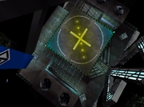

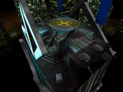

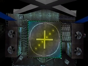

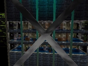

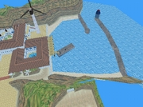

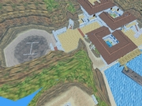

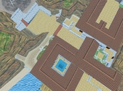

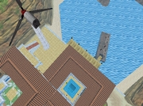

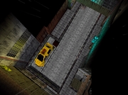

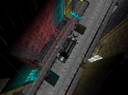

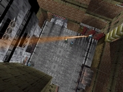

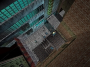
D009C7E4 0040 81206720 40F2 D009C7E4 0040 802066D3 0000 D009C7E4 0040 811ED720 40F2 D009C7E4 0040 801ED6D3 0000 D009C7E4 0040 811D4720 40F2 D009C7E4 0040 801D46D3 0000